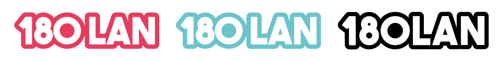

|
|
Dans le cadre du Comptoir 180 degrés, le FVS Group a été approché par Valais Esport pour organiser une LAN-Party qui aurait lieu lors du comptoir 180 degrés, du 22 au 25 avril 2020. J'ai donc été chargé de la création graphique d'une affiche, de logos et de billets concernant cet événement.
L'affiche reprend donc des couleurs flashy qui s'accordent bien avec le concept de l'événement: une centaine de joueurs sont réunis dans le CERM 2 pour participer à une compétition de jeux-vidéos. Bien que l'événement soit tout-public, une grande partie des joueurs inscrits faisaient partie d'une structure.
L'idée derrière les logos a été de recréer un effet "stickers" avec le contour épais donné à ces derniers.